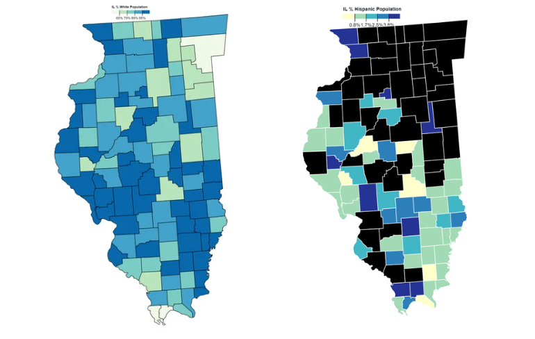
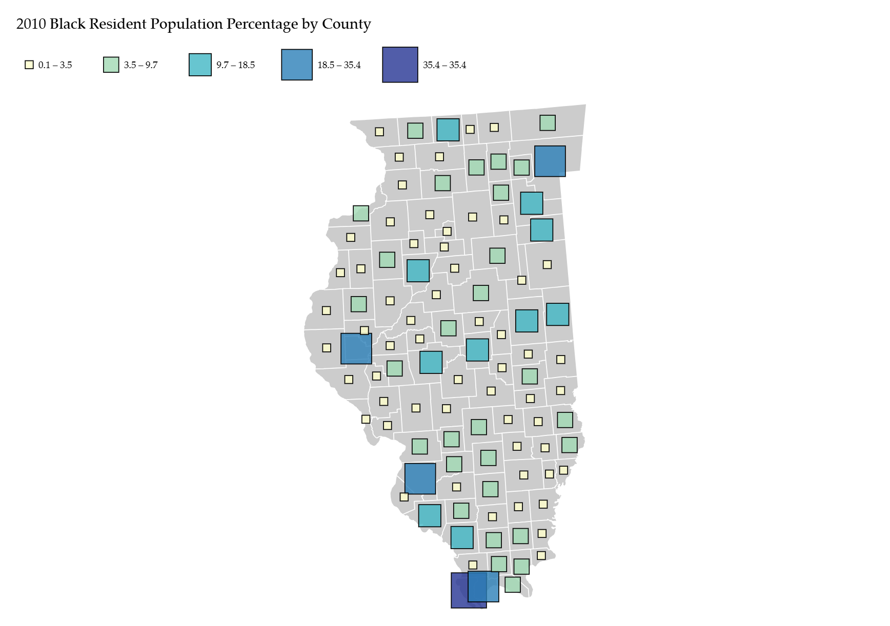
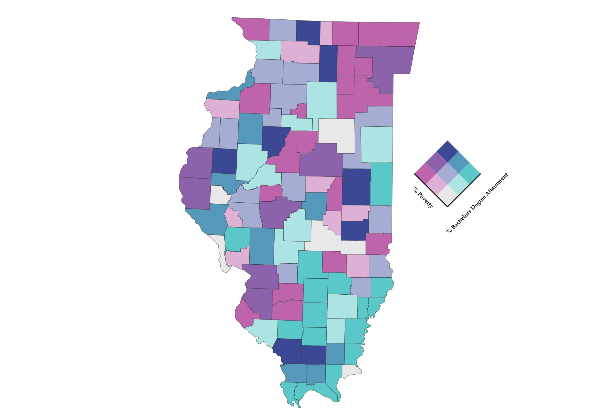
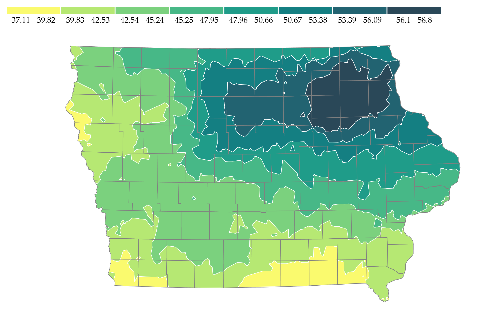
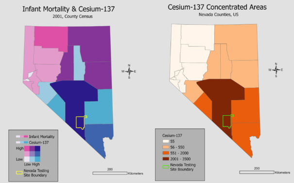
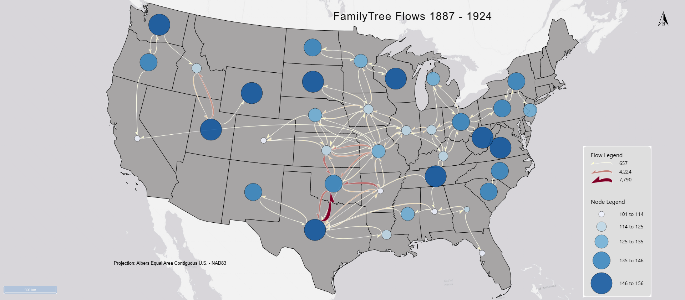
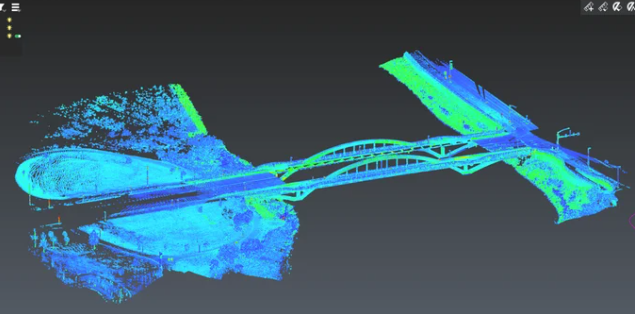

The choropleth map on the left represents the distribution of White Illinois residents, and the map on the right is of Hispanic Illinois residents. Both choropleth maps combine spatial geometry from the same TopoJSON file with attribute data from a common CSV file. The percentage information was normalized by dividing the demographic population count by the state's total 2010 population. A sequential color scheme is used to represent differences in the white percentage and hispanic percentage.

This map presents Black resident population percentages across Illinois Counties. The map creation involved combining spatial geometry from a geojson file to attribute information of CSV population counts. This map uses the ColorBrewer sequential color scheme YlGnBu and five classes (Natural Breaks classification).

This map uses a bivariate legend to show the pattern combinations of poverty percentage in Illinois counties and percentage of Bachelor degree recipients. This doesn't suggest statistical realtionship but it allows the viewer to investigate the variable characteristics and overall relationships.

This data is from the Iowa Environmental Mesonet (IEM), showing precipatation percentages across the state of Iowa. The color scheme highlights light and dark colored areas, to illistrate high and low levels of precipatuion. The map appears to pinpoint a cluster of high precipatation in the NE region of the state, indicating 56.1 -58.8 rates.

This map is the final project for SEES: 3540. This geographic visualization project attempts to provide insight into current infant mortality and Cesium levels across Nevada Counties. The map shows patterns of Cesium-137 isotope exposure risk given Nevada's history of nuclear weapons testing.

This project visualizes FamilyTree US migration movement patterns from 1887 to 1924 using flow lines. The map highlights major destinations and origins while showing directional movement patterns across regions.

This is a LiDAR mapping project that I conducted to assess the erosion risk of an area of Iowa City's Hancher Auditorium Floodplain. The image is of the registered scan post preprocessing work in Cyclone3Dr.